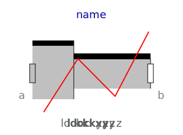
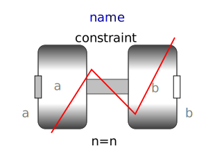
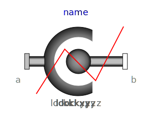
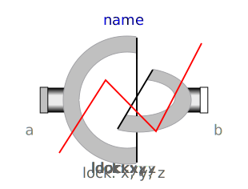

This package contains constraint components, that is, idealized, massless elements that constrain the motion between frames by means of kinematic constraints. The constraint elements are especially aimed to be used for multibody models which contain kinematic loops. Usually, kinematic loops are automatically handled. However, the performance might be improved by either solving certain kinds of loops analytically with the help of the components of subpackage Assemblies, or by providing numerically better loop constraint formulations with the help of the components of this subpackage.
| Name | Description |
|---|---|
|  Prismatic | Prismatic cut-joint and translational directions may be constrained or released |
|  Revolute | Revolute cut-joint and translational directions may be constrained or released |
|  Spherical | Spherical cut joint and translational directions may be constrained or released |
|  Universal | Universal cut-joint and translational directions may be constrained or released |